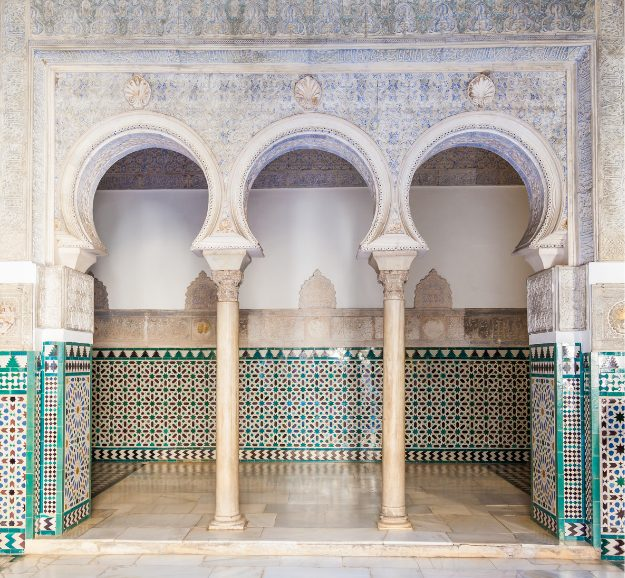
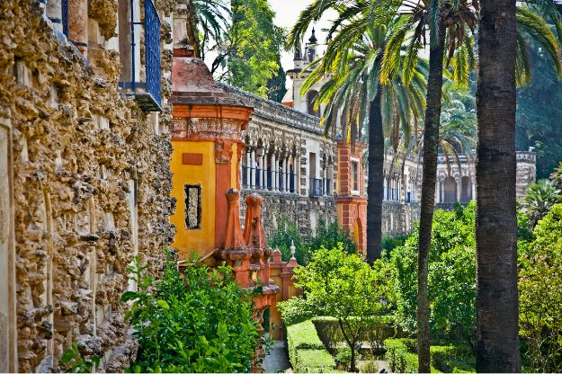

Alcázar i Sevilla er et kongelig palass og UNESCO-verdensarv, og den eldste kongelige residensen som fortsatt er i bruk i Europa. Reales Alcázares er som å komme rett inn i en eventyrfortelling. Så full av legender, palasser og historisk drama at det er vanskelig å forestille seg at alt dette faktisk skjedde — her, bak disse murene, i denne byen som er blitt mitt hjem.
Sevillas eldste fundament
Det som fascinerer meg mest med Alcázar er ikke det du ser — selv om det du ser er overveldende vakkert. Det er det du ikke ser: alt som ligger under. Historien til dette stedet strekker seg lenger tilbake enn de fleste aner. Fenikierne var her. Romerne var her. Vestgoterne bygde videre. Og de mauriske herskerne skapte til slutt noe så usedvanlig vakkert at de kristne kongene, da de overtok Sevilla i 1248, rett og slett ikke klarte å rive det ned.
Alcázar er ikke bare ett byggverk – det er lag på lag med sivilisasjoner, stablet oppå hverandre gjennom to tusen år. Det er selve fundamentet i Sevillas fortid. Og det er nettopp det som gjør det så ubeskrivelig rikt å utforske.
«Hvert rom i Alcázar er en fortelling. Hvert flisemønster er et dikt. Hvert hagehjørne skjuler en hemmelighet. Man trenger en hel formiddag – og selv da er det ikke nok.»

Intriger, elskerinner og arabisk poesi
Historien til Alcázar er full av det som gjør historien menneskelig – ikke bare kriger og datoer, men kjærlighet, sjalusi, forræderi og makt. Kong Pedro I av Kastilia – kjent som Pedro el Cruel av fiendene og Pedro el Justo av vennene – bygde den vakreste delen av palasset på 1300-tallet. Han hentet mauriske håndverkere fra Granada og foreskrev en stil vi kaller mudéjar: en unik blanding av islamsk og kristen arkitektur som finnes i sin vakreste form nettopp her.
Pedro hadde en fascinasjon for den mauriske kulturen som gikk langt dypere enn arkitekturen. Han omgav seg med arabisktalende rådgivere, hadde diplomatiske forbindelser med sultanen i Granada – og veggene i palasset hans er dekket av arabisk kalligrafi og poesi, innmeislet i gips og keramikk med en presisjon som tar pusten fra meg hver eneste gang jeg ser det.
Og så er det historiene bak murene – de kongelige brødrenes intriger, maktkampene, de hemmelige passasjene. Alcázar er ikke et museum som forteller deg om fortiden. Det er fortiden, og den lever i hvert eneste rom.
Da jeg gikk fra rom til rom – og ble fullstendig blendet
Jeg husker veldig godt da jeg utforsket Alcázar for å lære det å kjenne som guide. Jeg gikk fra rom til rom, og ble rett og slett blendet. Ikke bare av størrelsen eller overdådigheten – men av detaljene. De fantastiske flisene – azulejosene – som dekker nedre del av veggene i så mange av rommene. Hvert enkelt mønster geometrisk presist, hvert enkelt fargevalg gjennomtenkt. Og så den arabiske skriften som løper langs veggene som en uendelig sang – vers fra Koranen, hyllester til kongen, ønsker om velsignelse – alt risset inn i gips av håndverkere for sju hundre år siden.
«Jeg gikk fra rom til rom og ble blendet. Ikke av gull eller rikdom – men av den stille perfeksjonen i hvert eneste flisemønster, hvert eneste arabiske vers på veggen.»
Hagene – en oase du gjerne kan tilbringe en hel formiddag i
Hvis palasset er eventyret, er hagene drømmen inni eventyret. De strekker seg over et enormt område bak palassbygningene – med fontener, kanaler, sitrustrær, myrter og roser som skaper en avslappende atmosfære som er nesten magisk på en varm sommerdag.
Det er her du finner to av mine absolutte favorittdetaljer i hele Alcázar. For det første de vakre påfuglene som går fritt rundt i hagene – som om de alltid har hørt hjemme her, og kanskje gjør de det. For det andre: det vanndrevne orgelet. Det er svært få av dem i Europa, og Alcázar har ett. Et instrument drevet av vannkraft, som spiller av seg selv – en teknologisk nysgjerrighet fra hundrevis av år tilbake som fremdeles fungerer og fremdeles overrasker besøkende.
Et levende kongelig residens
En detalj som overrasker mange: Alcázar er fremdeles i offisiell bruk av den spanske kongefamilien. Når kongen og dronningen besøker Sevilla, bor de her. Det gjør Alcázar til den eldste kongelige residensen som fremdeles er i aktiv bruk i Europa. Det er ikke et museum man har satt glass rundt – det er et levende sted med drøyt to tusen år med ubrutt historie.

- Fullt navn: Reales Alcázares de Sevilla – UNESCO-verdensarv
- Eldste kongelige residens i aktiv bruk i Europa
- Historien strekker seg tilbake til fenikierne og romertiden
- Den vakreste delen bygget av Pedro I på 1300-tallet i mudéjar-stil
- Hagene har påfugler som går fritt – og et sjeldent vanndrevet orgel
- Sett av god tid – gjerne en hel formiddag for palassene og hagene
- Kombibillett med Katedralen anbefales – bestill billetter på forhånd
- Besøk tidlig morgen eller etter kl. 14 for å unngå de største køene
Ofte stilte spørsmål
Reales Alcázares de Sevilla er et UNESCO-listet kongelig palass, og den eldste kongelige residensen som fortsatt er i aktiv bruk i Europa.
Tidlig morgen eller etter klokken 14, ifølge Gunvors erfaring som guide.
Ja, kombibillett med Katedralen anbefales, og det lønner seg å bestille billetter til Alcázar på forhånd.
Det finnes én opplevelse jeg ikke kan gi deg selv: å komme inn en time før palasset åpner for publikum, mens hagene fortsatt er tomme. Den turen kjøres på engelsk av samarbeidspartneren vår Walks, som har avtale om tidlig inngang.
Se turen hos Walks